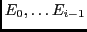
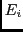
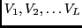
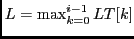
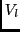
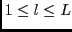
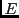
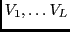
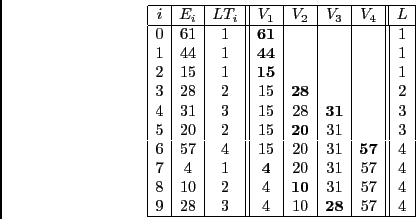

suivant: Question 4. 6 points.
monter: TP : Plus longue
précédent: Question 2. 4 points.
Au lieu de chercher dans
 quelle est la plus longue séquence croissante que peut prolonger ,
cherchez la dans un tableau
 ;
 est la longueur maximum des plus longues séquences connues quand est traité, et
 (avec ) est la valeur du dernier élément (dans ) de la plus longue séquence croissante de longueur .
Si un tel n'existe pas (quand est plus petit que tous ses précédents, ou que est nul),
alors votre recherche séquentielle dans
 rendra 0.
Refaites l'exemple précédent à la main. Vous devez obtenir cette figure (à lire de haut en bas) :

Dominique Michelucci
2012-12-06